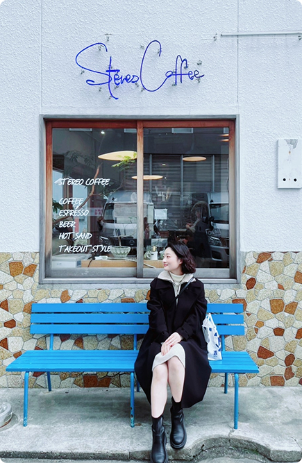
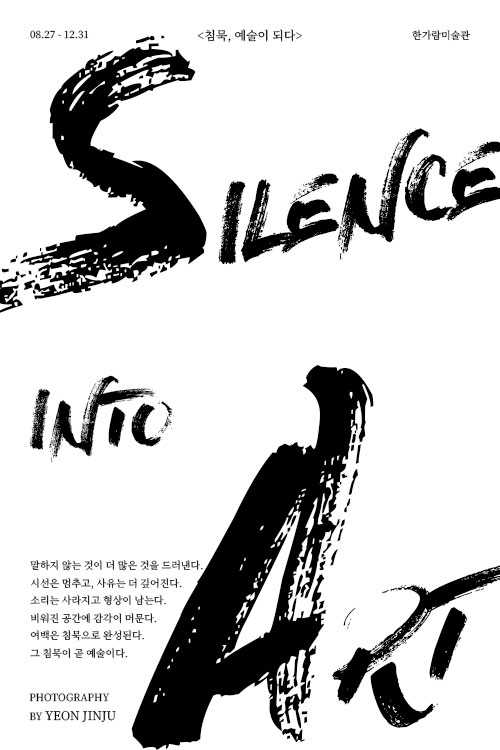
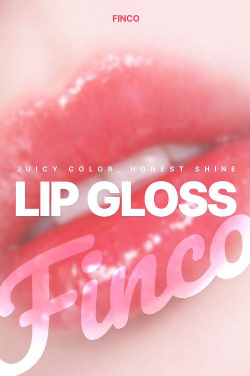
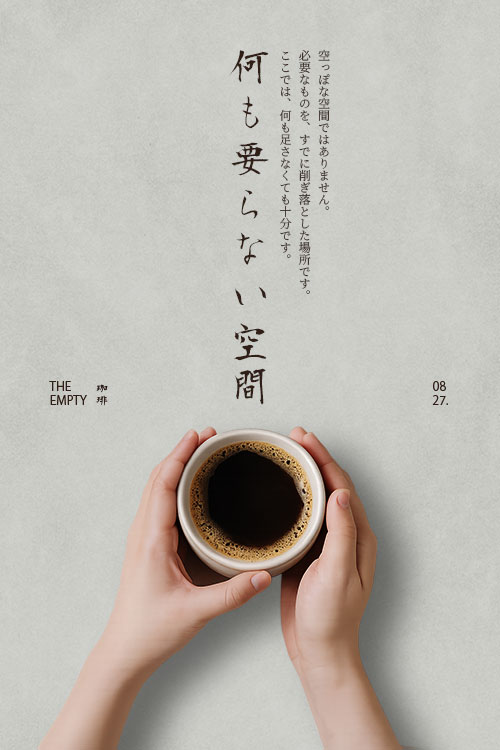
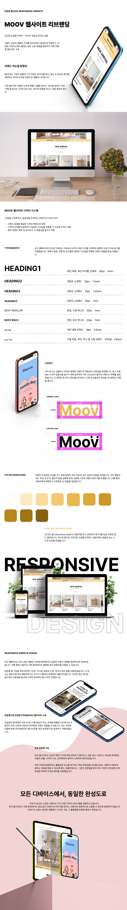

Designing for Understanding
사용자의 이해를 중심으로 경험을 설계하는 UI/UX 디자이너입니다.
디자인을 시각이 아닌 구조와 흐름의 문제로 접근하며,
복잡한 정보를 단순하고 명확하게 전달하는 것을 목표로 합니다.
또한 실제 구현 과정에 대한 이해를 바탕으로,
개발자와의 원활한 커뮤니케이션을 통해 디자인 의도가 정확하게 전달되는 협업을 지향합니다.

UX Thinking
사용자 이해를 기반으로 구조를 설계하고,
문제를 명확하게 정의하며 협업을 통해 구현까지 연결합니다.
-
사용자 이해
사용자의 행동과 맥락을 기반으로 문제를 정의합니다.
단순한 요구가 아닌, 실제 경험의 흐름을 이해하려고 합니다. -
구조와 흐름 설계
사용자의 행동과 맥락을 기반으로 문제를 정의합니다.
단순한 요구가 아닌, 실제 경험의 흐름을 이해하려고 합니다. -
협업과 커뮤니케이션
디자인 의도를 명확하게 전달하는 것을 중요하게 생각합니다.
개발자와의 원활한 소통을 통해 완성도를 높입니다.
Core Strength
사용자 이해를 기반으로 구조를 설계하고,
문제를 명확하게 정의하며 협업을 통해 구현까지 연결합니다.
-
디자인 시스템 구축
Figma에서 디자인 시스템을 구축하고,
일관된 경험과 효율적인 워크플로우를 설계합니다. -
컴포넌트 기반 설계
컴포넌트와 오토레이아웃을 활용하여
재사용 가능하고 유연한 UI 구조를 만듭니다. -
협업과 커뮤니케이션
Git과 GitHub를 활용하여 작업을 관리하고,
협업 환경에 맞는 워크플로우를 유지합니다.
certifications
디자인 툴을 활용해 시각적 완성도와 사용성을 함께 고려합니다.
- 2021.03.19
- GTQ(그래픽기술자격) 1급
- 한국생산성본부
- 2026.01.19
- JLPT(일본어능력시험) N1
- 일본국제교류기금 / 일본국제교육지원협회
Expertise
기획부터 디자인, 퍼블리싱에 이르기까지 프로젝트의 전 과정을 아우르는 기술 스택을 정리해보았습니다. 각 도구의 특성을 이해하고 최적의 결과물을 만들기 위해 활용할 수 있습니다.
-
Figma
오토 레이아웃과 변수(Variables)를 활용하여 체계적인 디자인 시스템을 구축할 수 있습니다. 실제 서비스의 프로토타입을 제작하여 사용자 흐름을 테스트하고 수정 및 검증할 수 있습니다.
-
Photoshop
다양한 소스를 합성하여 감각적인 메인 비주얼과 상세 페이지를 디자인할 수 있습니다. 그리고 무드와 주제에 맞는 팝업과 배너 디자인을 제작할 수 있습니다.
-
Photoshop
아이콘, 로고 등 확대해도 깨지지 않는 벡터 기반의 그래픽 요소를 제작할 수 있습니다. 브랜드 가이드를 바탕으로 일관성 있는 비주얼 아이덴티티를 설계할 수 있습니다.
-
html5
웹 표준을 준수하는 시맨틱 마크업으로 검색 엔진에 최적화된 구조를 설계할 수 있습니다. 웹 접근성을 준수하는 마크업을 구성하여 장애인도 쉽게 접근할 수 있는 홈페이지를 만들 수 있습니다.
-
CSS3
다양한 애니메이션을 구현하여 인터랙티브 홈페이지를 구현할 수 있고, 미디어 쿼리를 활용하여 모바일, 태블릿, PC 등 모든 디바이스에 대응하는 반응형 웹을 구현할 수 있습니다.
-
JavaScript
Vanilla JS를 활용하여 슬라이더, 모달, 스크롤 애니메이션 등 역동적인 인터랙션을 구현할 수 있습니다. ES6+ 문법을 바탕으로 효율적이고 가독성 높은 클린 코드를 작성할 수 있습니다.
-
Git
프로젝트의 변경 사항을 버전별로 기록하여 안정적으로 히스토리를 관리할 수 있습니다. 브랜치(Branch) 생성과 병합을 통해 여러 가지 기능을 동시에 독립적으로 개발할 수 있습니다.
-
GitHub
로컬 저장소의 작업물을 원격 저장소에 공유하여 팀원들과 실시간으로 협업할 수 있습니다. GitHub Pages를 활용하여 정적 웹 사이트를 배포하고 프로젝트 결과물을 외부에 공개할 수 있습니다.
-
Notion
디자인 가이드라인과 회의록을 문서화하여 팀 간 커뮤니케이션 비용을 줄일 수 있습니다.
Popup Designs
{ Refined for Clarity }
가로 500px 기준의 레이아웃을 벤치마킹하여, 사용성과 가독성을 고려해 재구성한 팝업 디자인입니다.
-

Silence, into Art
거친 브러시 타이포그래피를 통해 침묵의 감정과 에너지를 시각적으로 표현한 사진 전시회 포스터입니다.
강약 대비와 여백을 활용해 메시지의 울림이 더욱 깊게 전달되도록 구성했습니다.
-

Finco : Juicy Shine
가상의 코스메틱 브랜드 FINCO(FIND YOUR COLOR)를 기반으로, 개인의 컬러를 찾는 경험을 시각적으로 표현한 포스터입니다.
강렬한 컬러와 타이포그래피를 활용해 제품의 생동감과 브랜드 아이덴티티를 직관적으로 전달했습니다.
-

The Empty Space
여백과 절제된 타이포그래피를 통해 차분한 휴식의 감성을 표현한 포스터입니다.
미니멀한 무드가 어울리는 일본어 타이포그래피를 적용하였고, 불필요한 요소를 덜어내어 공간 자체가 메시지가 되도록 구성했습니다.
Poster Designs
{ Typography & Mood }
타이포그래피와 여백을 중심으로,
감성과 메시지를 직관적으로 전달하도록 설계한 포스터 디자인입니다.
Detail Pages
{ Product Detail & Conversion Focus }
AI를 활용한 이미지 생성과 카피라이팅 보조를 통해 정보 구조와 시각적 흐름을 설계하고,
포토샵, 일러스트레이터 등 디자인 툴을 사용하여 제품의 매력을 효과적으로 전달하기 위해 직접 제작한 상세페이지 디자인입니다.
Responsive Web Works
{ Flexible & Consistent UX }
A다양한 디바이스 환경에 맞춰 레이아웃을 유연하게 설계하고,
어디서나 자연스럽고 일관된 사용자 경험을 제공할 수 있도록 디자인하였습니다.
Break Point
1Project
Clinique Responsive Website
복잡한 정보 구조를 재정리하여 가독성을 개선한 리디자인 프로젝트입니다.
클린하고 절제된 레이아웃과 컬러 시스템을 적용해
더마 브랜드에 어울리는 신뢰감 있는 사용자 경험을 구현하였습니다.


A Clear-Minded Designer
사용자의 관점에서 명확한 구조를 설계하고, 끝까지 완성하는 디자이너 연진주입니다.
절제된 디자인과 명확한 구조를 통해 사용자가 보다 쉽게 이해할 수 있는 경험을 설계하고,
작은 디테일까지 책임지는 태도로 완성도 높은 결과를 만들어내는 디자이너로 성장하겠습니다.